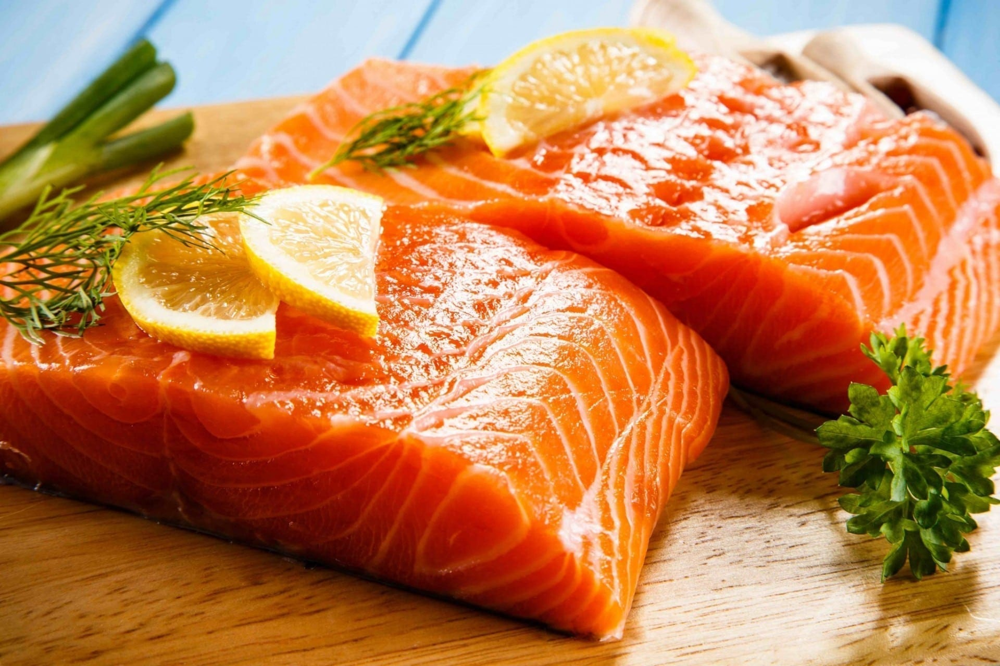

Salmon Dish
This is lasagna made of miced meat and
dough
Ingredients...
- 50/2oz butter
- 1 finely chopped Onion
- 150g rice
- 150g rice
- 125ml white wine
- 1ltr hot vegetable stock
- The juice and zest of one lemon
- 240g large king prawns
- 150g salmon
- 100g tips blanched briefly in boiling water asparagus
- ground black pepper
- 50g shavings parsmesan
Steps...
- Melt the butter in a thick-based pan and gently cook the onion without colour until it is soft.
- Add the rice and stir to coat all the grains in the butter
- Add the wine and cook gently stirring until it is absorbed
- Gradually add the hot stock, stirring until each addition is absorbed.
- Keep stirring until the rice is tender
- with the lemon juice and zest, and pepper to taste. (there will probably be sufficient saltiness from the salmon to not need to add)